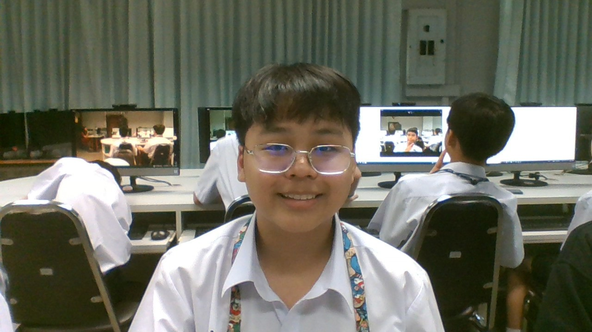

นายธีรยุทธ มาณะจักร : ขอบคุณมากๆนะครับที่ดูแลผมมาตอน ม.1 ทำให้ผมมาถึงจุดนี้ได้
บทเพลงที่มอบให้ครู

นายนนท์ปวิธ กันเกลา : ขอบคุณมากๆนะครับที่สอนวิทย์ให้ผมตอน ม.1 ทำให้ผมสอบวิทย์ได้เกรด 4 ครับ
บทเพลงที่มอบให้ครู

นายธนน บัวระพันธ์ : ขอบคุณครับที่ให้โอกาศผมไปแคนาดาและดูแลผมที่แคนาดาครับ
บทเพลงที่มอบให้ครู

จัดทำโดย : เด็กชายนนท์ณภัทร นวะมะวัฒน์ 212 เลขที่ 9